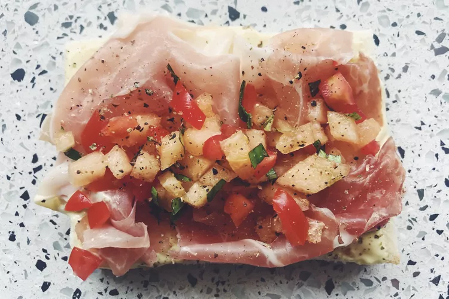

Prosciutto and Cantaloupe Bruschetta Tramezzini

Description
A cold Italian finger sandwich which can come in a variety of
different variations. This sandwich was briefly seen in Part 1
when Zeppeli, the Hamon master from Italy, was introduced.
Ingredients for the mayonnaise
- 1 egg yolk
- 1 whole egg
- 1 tbsp high-quality ground mustard powder
- 1/2 tsp salt
- 1 tsp raw sugar
- Juice of 1 whole lemon
- A splash of white wine vinegar to make it tangier
- 1/2 cup extra-virgin olive oil
- 2 tbsp avocado oil (optional)
Ingredients for the sandwich bits
- 2 slices white bread with the crusts removed
- 3 very thin slices of prosciutto
- 2 tbsp cantaloupe, finely chopped
- 2 cherry tomatoes, finely chopped
- 2 basil leaves, julienned
- Freshly cracked black pepper
Steps
- To make the mayonnaise, blend the mayonnaise ingredients
together, reserving the oils.
- Once it's thoroughly combined,
slowly whisk in about a half cup of olive oil and a few
tbsp avocado oil until it reaches the desired consistency.
Season to taste.
- Mix together the cantaloupe, cherry tomatoes and basil
in a small bowl and set aside.
- Smear on a medium-thin layer of the homemade mayonnaise
onto a slice of crustless thin white bread and top with
the prosciutto and the cantaloupe mixture.
- Add a few cranks of freshly cracked black pepper. Finally,
add a thin smear of the mayonnaise to the top slice of
bread and place it on top.
- Slice the sandwich diagonally from corner to corner to
create two triangles.